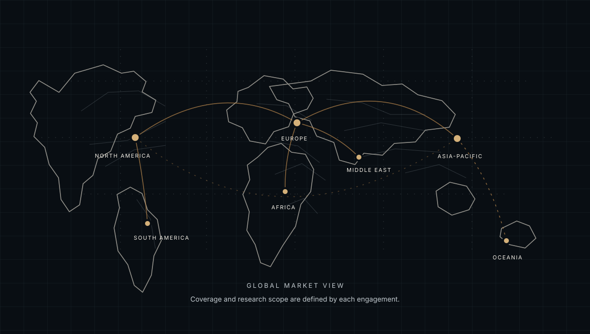

FOR EMPLOYERS · EUROPE
Map the European leadership talent you need.
Make a cross-border search more focused by defining the mandate, target countries and evidence of leadership fit.
KOV supports employer-side executive talent research and sourcing where the brief and market are a fit. Each search is defined individually; Europe is not treated as one uniform labor market.

DEFINE GEOGRAPHY
Choose markets based on the role's actual needs.
A European search can span one country, several countries or talent with relevant cross-border experience. The right scope depends on where the role sits, language and regulatory requirements, mobility and the organization's operating model.
Agree these constraints before building a target-company map. This keeps research relevant and makes trade-offs visible to the hiring team.
- Countries and locations in scope
- Language, mobility and work requirements
- Role location and reporting structure
- Transferable experience the client will consider
RESEARCH AND PRIORITIZE
Use role evidence to focus the candidate universe.
KOV can identify relevant organizations and leadership backgrounds, then compare researched profiles with the agreed success criteria. The output is a structured view of potential relevance, not a guarantee of availability or suitability.
Where outreach is included, messaging and approval boundaries are set with the client. Candidate interest and hiring decisions remain separate steps.
- Market and company mapping
- Research against role-related criteria
- Documented prioritization and context
- Approved outreach where included in scope
RESPECT LOCAL CONTEXT
Confirm local requirements for each country.
Hiring, employment, data handling and right-to-work requirements differ by country and can change. KOV's research work does not replace legal or regulatory advice.
KOV can discuss a remote research engagement and confirm the markets it can support. The page does not imply a local office or representation in every European country.
- Agree a country-by-country scope
- Confirm responsible handling of candidate information
- Use qualified local advice where needed
- Set deliverables and fees directly before work begins
COMMON QUESTIONS
Before you start a conversation.
Can one search cover multiple European countries?
It can be discussed. The countries, role requirements, research depth and outreach boundaries must be defined in the brief and confirmed as available.
Does KOV provide legal or right-to-work advice?
No. Employers should verify employment, data protection and right-to-work obligations with qualified advisers in each relevant jurisdiction.
START A CONFIDENTIAL CONVERSATION
Clarify the remit and markets you want to cover.
Share the role, country scope and leadership criteria. KOV can discuss research depth, outreach and the boundaries of a potential engagement.
KOV works remotely across agreed markets; this page does not imply a local office or guaranteed outcome. Engagement scope and fees are discussed directly by message and agreed in writing before work begins.